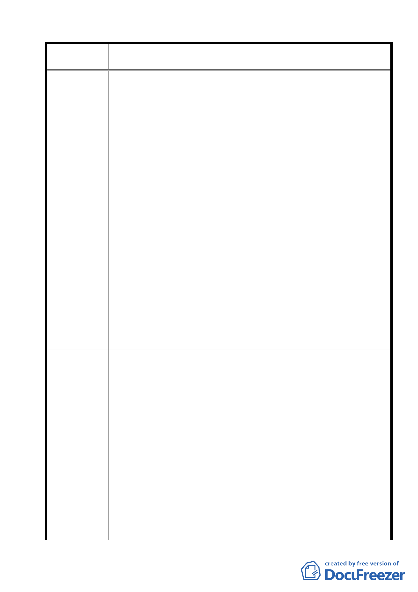

案名
建議辦法
變更臺北市士林區陽明山山仔后地區第二種住宅區為特定住宅區
細部計畫案
區為保存區。甚至可採取獎勵措施，鼓勵台銀，取之於公再還
於公。
都發局雖依文化局所作的保護計劃，補充修正去年公展的
細部計劃，法令依據也是文資法第 56 條。但综觀其內容，僅著
點於使用放寬、容積轉移、空間及建築的管制，並未依文資法
第 56 條及都市計劃法規第 15 條第 5 款，將美軍宿舍群劃為
「文化景觀保存區」。
兩局皆未依據文資法第 56 條中最有保護力的一段法規，
擬定保護計劃與細部計劃，好比一位戰士、有數個利器供挑選
作戰，卻選了最無殺傷力的兵器去保護自己。這種投降行為，
讓我們百思不解。
文化局與都發局花了 3 年的時間，開了無數次的會議，集
結理、法、民意及公權力，只畫了一幢空中樓閣，仍舊不能落
實保存此區！難道我們的社會真的只講究程序正義，而無實質
正義？
山仔后美軍宿舍群在「文化景觀」的名義下，依舊回到原
點 — 性命不保！
※附件：1.文建會令：何謂「公有」文化資產
2.山文室字第 960020507 號
3.山文室字第 960030528 號
4.美軍宿舍群地目與財產轉移過程
5.地號謄本一份
1 我們再一次強調這塊土地的公有性。台銀由土地「管理者」變
成「所有者」，是在廢省時，經由省議會同意，行政院下的命令
變更的。並非買賣所得。當時，台銀仍是國家銀行，省議會的
決議，是將「公有」的土地託付給「公有」的機構，並非轉移
給「私有」公司。代表民意的省議會做此決議的原始用意，不
容後繼執政者任意扭曲！
台銀在 2003 年變更體制為股份有限公司時，財政部就應將
台銀名下的土地歸還國產局，人民信託的政府，竟然幫忙竊取
人民的土地，簡直匪夷所思！
2.依文資法第四條：具有二種以上類別性質之文化資產，其主管
機關，與文化資產保存之策劃及共同事項之處理，由文建會會
同有關機關決定之。
我們希望文建會依法主動參與保存計劃。也請文建會依文
資法第四條與財政部會商，共同傾聽民意，拿出行政的力量，
確確實實地保存維護這塊珍貴的土地 !
26